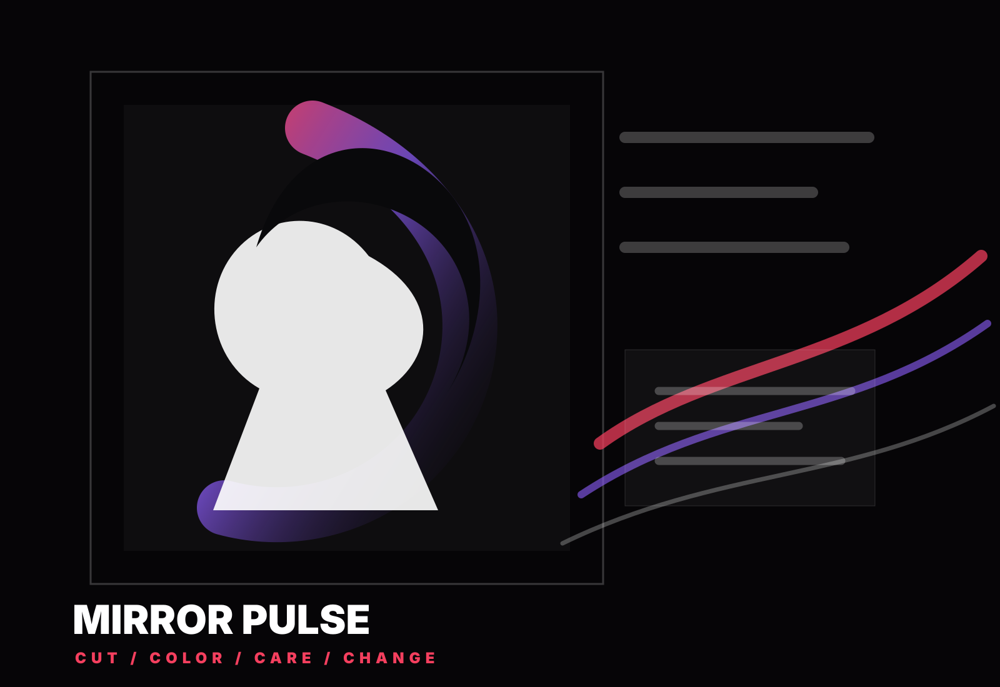

Three moving concepts / noindex preview
東小金井の青いテントを、夜の光に変える。
50年続く美容室の安心感は残しながら、20-30代男女がスマホで見た瞬間に予約したくなる、 人工的で強いグラフィックの3案です。
Candidate 02 / editorial hair mood
Mirror Pulse Editorial
鏡の前で少しずつ自分が変わる感覚を、人物シルエットと反射光で表現。 美容室らしい高揚感をいちばん強く出す案です。

Selection gate
ここで一度、選定待ち。
次工程では、選ばれた1案だけを Home / Menu / Access / News / Blog の5ページへ展開します。 価格・住所・営業時間などの事実は現行サイト由来で保持し、コピーは若年層向けに再編集します。